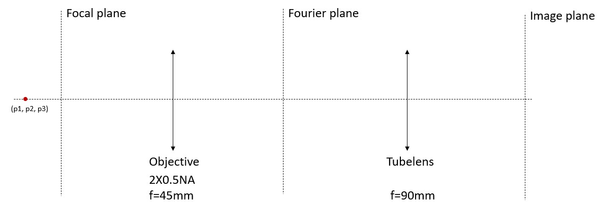

[Simulation] A microscope
I start from simple model, a microscope consisting of one infinity-corrected Objective and one tube lens, to validate the accuracy of the numerical model. In microscope usage, sample is placed at the fore-focal plane of the Objective. An "infinity space" of parallel light is created between the Objective and the tube lens, which brings the advantages over the non-corrected Objectives such as the flexibility of installing filters, modulators in the middle. A tube lens is designed for the Objectives of each specific manufactuer. It collects the light and forms the image at the rear-focal plane. The pupil distance is the optimal distance between the tube lens and the entrance pupil of the objective, which is a range. But here I just treat it as a 4f system where the rear-focal plane of the Objective coincides with the fore-focal plane of the tube lens. 
Some theories
1. Fresnel diffraction
Fresnel formula describes the diffraction that happens in near field of the aperture. It's relatively accurate if Fresnel number $F = \frac{w^2}{z\lambda}$ is around 1~10.
Where . Due to the existence of $exp(\frac{ik}{2z_1}(x_1^2+y_1^2)$ in the fourier transform, the diffraction pattern is dependent on the propogation distance. There are ways to numerically compute the pattern:
Dumb calculation by hand-written integral using the formula
scale = 16; dx2 = lambda*fmla/dx1/fovN*scale; x2space = dx2 * [ ceil(-fovN/scale/2):ceil(fovN/scale/2)-1 ]; y2space = x2space; E2 = zeros(1, fovN/scale*fovN/scale); parfor g = 1:fovN/scale*fovN/scale tic; xx2 = x2space(1, mod( (g-1), (fovN/scale) ) + 1 ); yy2 = y2space(1, ceil( g / (fovN/scale) ) ); Koi = exp(1j*k*fmla)/(1j*lambda*fmla) * exp(1j*k/2/fmla*(xx2^2+yy2^2)); for aa = 1 : fovN for bb = 1 : fovN xx1 = x1space(aa); yy1 = y1space(bb); integrand = E1(bb,aa) * exp(1j*k/2/fmla*(xx1^2+yy1^2)) * exp(-1j*k/fmla*(xx2*xx1+yy2*yy1)) * dx1 * dx1; E2(g) = E2(g) + integrand*Koi; end end toc end E22 = reshape(E2', [fovN/scale, fovN/scale]); E22 = E22';Very time comsuming when image resolution is high (in practice, time consumption is acceptable only when resolution is several hundred). But there is no limitation from sampling issue. In another word, it doesn't affect the accuracy if we use a small sampling number, in contrast to following FFT-based methods.
- Fresnel Transfer Function (TF) Propagator
The convolution of two functions can be computed by the inverse fourier transformation of the multiplication of their fourier transformations respectively. Discrete sampling of the source field, sampling of the transfer function, and the periodic nature of the FFT can lead to a variety of artifacts in the propagation result. In order to suppress artifacts:
- The simulation array size should be larger than the source field, i.e. the aperture;
$dx >= \frac{\lambda z}{L}$, $L$ is the length of the array. This ensure the adequate sampling of the transfer function H.
Note that the result is the same whether a single TF propagation or a sequence of shorter TF propagations is used. This is because a succession of TF propagations is the same as applying the product of the transfer functions to the initial field.
function [f2, dx2, x2] = fresnelTF2d(f1, dx1, z, lambda)
% assuming dx1=dy1, Nx=Ny
k = 2*pi/lambda;
[~, N] = size(f1);
% determine if it oversamples
fprintf("dx: %f should be larger than lambda*z/L: %f; Adequately sampling: %d\n", dx1, lambda*z/N/dx1, dx1>lambda*z/N/dx1);
du = 1/(N*dx1);
u = du*[ ceil(-N/2):ceil(N/2)-1 ];
[U, V] = meshgrid(u, u);
H = exp(-1j*pi*lambda*z*(U.^2+V.^2));
H = fftshift(H);
% f2 = exp(1j*k*z)*ifft2( fft2(f1) .* H );
f2 = exp(1j*k*z)*ifftshift( ifft2( fft2(fftshift(f1)) .* H ) );
dx2 = dx1;
x2 = dx2*[ ceil(-N/2):ceil(N/2)-1 ];
end
Fresnel Impulse Response (IR) Propagator
Similar to FT Propagator, in order to suppress artifacts:
- The simulation array size should be larger than the source field, i.e. the aperture;
- $dx <= \frac{\lambda z}{L}$, $L$ is the length of the array. This ensure the adequate sampling of the impulse function.
Note that the second creterion is exactly the opposite to FT Propagator, which indicates compared to FT Propagator, IR Propagator is more suitable in long distace Fresnel propagation.
function [f2, dx2, x2] = fresnelIR2d(f1, dx1, z, lambda)
% assuming dx1=dy1, Nx=Ny
k = 2*pi/lambda;
[~, N] = size(f1);
% determine if it oversamples
fprintf("dx: %f; lambda*z/L: %f; Adequately sampling: %d\n", dx1, lambda*z/N/dx1, dx1<lambda*z/N/dx1);
x1 = dx1 * [ceil(-N/2):ceil(N/2)-1];
[X, Y] = meshgrid(x1, x1);
h = 1/(1j*lambda*z)*exp(1j*k/(2*z)*(X.^2+Y.^2));
H = fft2(fftshift(h))*dx1*dx1;
U1=fft2(fftshift(f1));
U2=H.*U1;
f2=ifftshift(ifft2(U2));
dx2 = dx1;
x2 = dx2*[ ceil(-N/2):ceil(N/2)-1 ];
end
2. Fraunhofer diffraction
Fraunhofer formula describes the diffraction that happens in far field of the aperture. It's relatively accurate if Fresnel number $F = \frac{w^2}{z\lambda}$ is << 1.
- Fourier transform
function [f2, dx2, x2] = fraunhofer2d(f1, dx1, z, lambda)
% assuming dx1=dy1, Nx=Ny
k = 2*pi/lambda;
[~, N] = size(f1);
% determine if it oversamples
fprintf("dx: %f should be larger than lambda*z/L: %f; Adequately sampling: %d\n", dx1, lambda*z/N/dx1, dx1>lambda*z/N/dx1);
dx2 = lambda*z/dx1/N;
x2 = dx2*[ ceil(-N/2):ceil(N/2)-1 ];
[X2, Y2] = meshgrid(x2, x2);
c = exp(1j*k*z) * exp(1j*k/2/z*(X2.^2+Y2.^2)) / (1j*lambda*z);
f2 = c .* ifftshift(fft2(fftshift(f1))) * dx1^2;
end
3. Wave propagation through a single Lens
In paraxial approximation (p.s. nearly all discussion above is based on paraxial approximation though), the pupil function, i.e. the modulation on the wavefront through the lens, is defined as
$f$ is the focal length, $Aperture(x,y)$ represents the finite pupil size. A basic aperture function can be
where $R$ is the radius of aperture.
Note that it's important to fullfill the sampling criterion:
where $D$ is the diameter of the lens aperture and $dx$ is the sampling step size. This criterion indicates that large sampling number, finer sampling step size should be used to simulate small F number lens.
Let's consider how wavefront propagates to the rear-focal plane after a single lens.
If the wavefront right before the lens is $E_1(x_1, y_1)$, the wavefront at the back-focal plane via Fresnel propagation can be computed as
This is exactly the Fraunhofer diffraction and simply a fourier transform if we don't consider the extra phase term.
Now we want to extend the starting point of propagation from right before the lens to the fore-focal plane of the Objective. Instead of applying another Fresnel propagation, we consider what the difference is between two wavefronts at two planes in frequency domain. We know that light with a certain spatial frequency $(u,v)$ means the planar wave that travels at a certain direction. The spatial frequencies of this plane wave in three axis are $(\frac{cos(\theta_x)}{\lambda}, \frac{cos(\theta_y)}{\lambda}, \frac{cos(\theta_z)}{\lambda})$, while $cos(\theta_x)^2+cos(\theta_y)^2+cos(\theta_z)^2 = 1$ and $\theta$ is the angle between the propagation direction and the corresponding axis. For a certain plane wave, the phase change after propagation in the optical axis at a distance z is $i2\pi z \frac{cos(\theta_z)}{\lambda} = i2\pi z \sqrt{ \frac{ 1-(cos(\theta_x)^2 - cos(\theta_y)^2)}{\lambda^2 }}$. If we relate this physically defined spatial frequency $(\frac{cos(\theta_x)}{\lambda}, \frac{cos(\theta_y)}{\lambda}, \frac{cos(\theta_z)}{\lambda})$ to the one we computed through FFT, $(u,v)$. The phase change can be expressed as $i2\pi z \sqrt{1-u^2 - v^2)} = i2\pi z \sqrt{\frac{1}{\lambda^2} -(\frac{x}{\lambda f})^2 - (\frac{y}{\lambda f})^2)}$. Under paraxial approximation (i.e. $x << f$, $y << f$), the reduct of this term is $-i\frac{\pi z}{\lambda f^2}(x^2+y^2)=-i\frac{kz}{2f^2}(x^2+y^2)$.
p.s. Another perspective from geometric optics: $cos(\theta_z) = 1-sin(\theta_z)^2\approx 1 - tan(\theta_z)^2 = 1 - \frac{x^2+y^2}{f^2}$, where $(x,y)$ is the spatial coordiante at the fourier plane (rear-focal plane). Here we consider the chief ray that passes through the center of the lens.
This indicates that, if we look at the wavefront at the fore-focal plane ($z=f$) $E_0$ and the wavefront right before the lens $E_1$, they have a relation that $\mathscr{F}(E_1)=\mathscr{F}(E_0)exp(-i\frac{k}{2f}*(x^2+y^2))$, where $(x,y)$ is the spatial coordiante at the fourier plane (rear-focal plane).
Let's input this into the equation we derived for wavefront propagation from right before the lens to the rear-focal plane. We will get:
It means that the rear-focal plane is exactly the fourier tranform of the wavefront at the fore-focal plane. This is the modulation of a lens. Note that we didn't consider any finite aperture in this derivation. One can insert the aperture function $Aperture(x, y)$ to the above equations.
function [f2, dx2, x2] = lenFT2d(f1, dx1, flens, lambda)
% assuming dx1=dy1, Nx=Ny
k = 2*pi/lambda;
[~, N] = size(f1);
dx2 = lambda*flens/dx1/N;
x2 = dx2*[ ceil(-N/2):ceil(N/2)-1 ];
[X2, Y2] = meshgrid(x2, x2);
Koi = -1i*exp(1i*k*flens)/(lambda*flens);
f2 = Koi .* ifftshift(fft2(fftshift(f1))) * dx1^2;
end
4. Debye integral
5. Some notes about FFT in MATLAB
Take extra care of FFT and iFFT in MATLAB because their coordinate system is defined as following: For a 2D N x N matrix, on each axis, (0, N/2) is the positive half axis and (N/2+1, N) is the negative half axis.
To compute the frequency domain of a 2D image: img_fft = fft2( fftshift(img));
To compute the frequency domain of a 2D image and visualize it in original image coordinate: img_fft = ifftshift(fft2( fftshift(img)));
To compute the space domain of an un-shifted result of the 2D image fft: img_2 = ifft2(fft2( fftshift(img)));
To compute the space domain of an un-shifted result of the 2D image fft and visualize it in original image coordinate: img_2 = ifftshift(ifft2(fft2(fftshift(img)));
To compute the space domain of a shifted result of the 2D image fft: img_2 = ifft2(fftshift(ifftshift(fft2( fftshift(img)))));
To compute the space domain of a shifted result of the 2D image fft and visualize it in original image coordinate: img_2 = ifftshift(ifft2(fftshift(ifftshift(fft2(fftshift(img))))));
Compute the PSF of the microscope
Debye integral (gold standard)
%% calculate PSF through debye integral
% objective
NA = 0.5;
fobj = 45e-3; % focal length of objective, mm
% tubelens
ftbl = 90e-3; % focal length of the tubelens, mm
M = ftbl / fobj;
% Question1: does any focal length of the tubelens work? is the total
% magnification simply the ftbl/fobj ?
% define the image space
pixelsize = 1e-06 ;%6.5e-6;
imgWidth = 512;
x1space = pixelsize*[ceil(-imgWidth/2):1:ceil(imgWidth/2)];
x2space = x1space;
sampleNum = length(x1space);
% define the object space
p1 = 0e-6;
p2 = 0e-6;
% p3 = -100e-6; % point at (0,0,0um)
p3 = 1e-6*linspace(-150,150,15);
lambda = 520e-9; % wavelength: 520nm
n = 1;
for p = 1:length(p3)
%%%%%%%%%%%%%%%%%%%%%%%%%%%%%%%%%%%%%%%%%%%%%%%%%%%%%%%%%%%%%%%%%%
centerPT = ceil(length(x1space)/2);
halfWidth = imgWidth/2; % dont compute the entire image space but only -halfWidth:halfWidth
centerArea = ( max((centerPT - halfWidth),1) : min((centerPT + halfWidth),length(x1space)) );
%%%%%%%%%%%%%%%%%%%%%%%%%%%%%%%%%%%%%%%%%%%%%%%%%%%%%%%%%%%%%%%%%%
k = 2*pi*n/lambda;
alpha = asin(NA/n);
x1length = length(x1space);
x2length = length(x2space);
zeroline = zeros(1, length(x2space) );
%%%%%%%%%%%%%%%%%%%%%%%%%%%%%%%%%%%%%%%%%%%%%%%%%%%%%%%%%%%%%%%%%%
%%%%%%%%%%%%%%%%%%%%%%%%%%%%%%%%%%%%%%%%%%%%%%%%%%%%%%%%%%%%%%%%%%
pattern = zeros(x1length, x2length);
parfor a=centerArea(1):centerPT
patternLine = zeroline; % create variable patternLine to support multi-threading
for b=a:centerPT % only compute the 45 deg sector of the image
x1 = x1space(a);
x2 = x2space(b);
xL2normsq = (((x1+M*p1)^2+(x2+M*p2)^2)^0.5)/M;
v = k*xL2normsq*sin(alpha);
u = 4*k*(p3(p)*1)*(sin(alpha/2)^2);
Koi = M/((fobj*lambda)^2)*exp(-1i*u/(4*(sin(alpha/2)^2)));
intgrand = @(theta) (sqrt(cos(theta))) .* (1+cos(theta)) .* (exp((1i*u/2)* (sin(theta/2).^2) / (sin(alpha/2)^2))) .* (besselj(0, sin(theta)/sin(alpha)*v)) .* (sin(theta));
% here I refered to Changliang's paper and corrected the sign of the
% exp((1i*u/2) from exp((-1i*u/2)
I0 = integral(@(theta)intgrand(theta),0,alpha);
patternLine(1,b) = Koi*I0;
end
pattern(a,:) = patternLine;
end
%%%%%%%%%%%%%%%%%%%%%%%%%%%%%%%%%%%%%%%%%%%%%%%%%%%%%%%%%%%%%%%%%%
%%%%%%%%%%%%%%%%%%%%%%%%%%%%%%%%%%%%%%%%%%%%%%%%%%%%%%%%%%%%%%%%%%
patternA = pattern( (1:centerPT), (1:centerPT) );
patternAt = fliplr(patternA);
pattern3D = zeros(size(pattern,1), size(pattern,2), 4);
pattern3D(:,:,1) = pattern;
pattern3D( (1:centerPT), (centerPT:end),1 ) = patternAt;
pattern3D(:,:,2) = rot90( pattern3D(:,:,1) , -1);
pattern3D(:,:,3) = rot90( pattern3D(:,:,1) , -2);
pattern3D(:,:,4) = rot90( pattern3D(:,:,1) , -3);
pattern = max(pattern3D,[],3);
%%%%%%%%%%%%%%%%%%%%%%%%%%%%%%%%%%%%%%%%%%%%%%%%%%%%%%%%%%%%%%%%%%
% figure;mesh(abs(pattern).^2);
% PSF = (abs(pattern)).^2;
% PSF = PSF./max(max(PSF));
% % figure(6);
% % imshow(PSF);
% imwrite(uint16(PSF.*65535),'./PSF_debye/PSF_debye.tif');
%
PSF = (abs(pattern)).^2;
PSF = PSF./max(max(PSF));
imwrite(uint16(PSF.*65535),sprintf('./PSF_debye/PSF%d.tif',p));
end